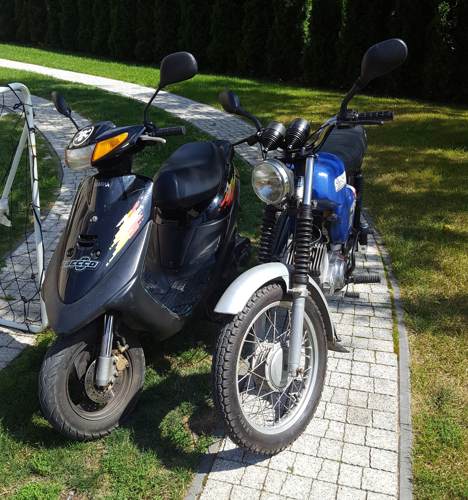
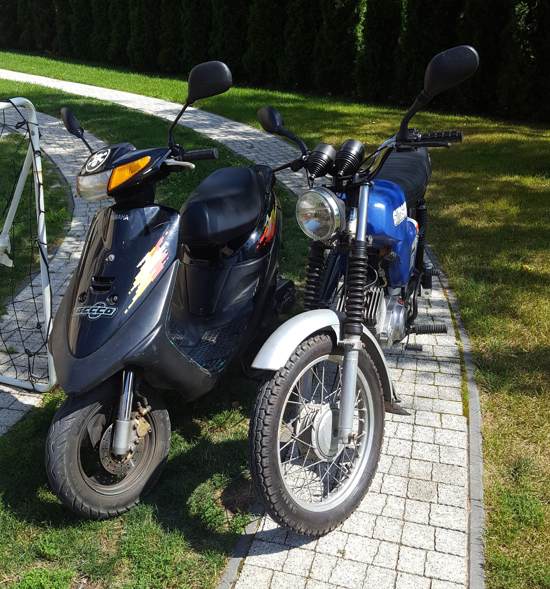

Munkásság és hobbik:
A "motoros" karrierem ezzel a gépsárkánnyal kezdőtött. 2014-ben vettük elő, sok évre letámasztottan állt egy volier(madárház)ban. Amire működőképes lett a helyi szerelő segítségével, addigra a jogsim is megvolt. Japán szerkezet, megbízható, töredék annyi hiba lépett fel, mint a Simsonomnál. Az évek alatt azonban egyszer szerelő cserélte a berúgó fogasívet és az automata szívatót. Én kétszer cseréltem akkumlátort (ez sok szétszedést jelentett), illetve meg kellett csinálnunk a kilyukadt benzintartályát, mert egy csavar hegye, amely az egyik oldalidomot tartotta, pont belefúródott a tankba. (Jelezném, hogy a facsavarnak az alkalmazását nem én követtem el). Ezenkívül az első fék fékfolyadék tartályának az elérett műanyag ablakjával kellett kezdeni valamit. Ma is a családi "géppark" része.
 


A következő lépés egy Simson S51/1C1-H (Electronic) típusú segédmotorkerékpár volt. Ha mondhatjuk, belekóstolhattam a veteránozásba. Mondjuk így. NDK-ban gyártott, itthon is népszerű modell volt, és most is. Eredetileg kék színű volt, ezüst sárvédőkkel. Aztán kapott egy meggypiros színű "fényezést", kb. 2 éve pedig kikerestem egy piros és egy ezüst RAL színkódot, ami hasonlít a gyárira, illetve ez a színkombináció is létezett, tehát mondhatni, típusazonos festést kapott. Bár, hogy piros volt-e, nem tudjuk. De hát akkor jöjjön, hogy mit szenvedtem én vele (az emlékezetesebb hibákat érintve, továbbá gyakran segítséggel sikerült megoldani a problémákat): egyrészt, sok alkatrész kellett, rögtön az elején, mert vagy elöregedett volt, vagy tönkrement. Első tologatós élményre nem is kellett sokat várni, emlékszem, hogy a gyújtása (mikor ad szikrát a gyújtógyertya) állandóan elállítódott. Így volt, hogy a háztömb körül körbetoltam, mert nem indult el. Ezt egy bontott lendkerékkel lehetett orvosolni. Egyszer a karburátorba beletörtem a szívató dugattyú házat, amely egy elképesztően silány, öntött anyagból volt. Új karburátor kellett, mert emellé még az úszóház sem zárt rendesen, folyt belőle a benzin. Később aztán lakóhelyem főutcáján krúzolva, egyszer csak leállt, és tolhattam haza, a gyújtótekercs megadta magát. Valamint, a teleszkópjaival is szétszedtem, új olajat töltöttem beléjük, és kicseréltem, amit szükséges volt. A kormányművet sem hagyhattam a rossz állapotában, az alsó villahíddal mindeképp kezdeni kellett valamit, mert a csapágyfészek elkopott, alul-felül kormánycsapágyat, csészét cseréltem, és egy bonott alsó villahídat tettem bele. Ám az évek alatt egyre üzembiztosabb lett. Ritkán használom, de mindig hadra fogható. Mivel nincs benne akkumlátor, így kézzel kell indexelni, viszont ez azt is jelenti, hogy meglehetősen egyszerű konstrukció. A segédmotorkerékpárok Trabantja.
A képen látható dolog, még csak egy projekt, mert nem vagyunk vele készen. Unokatestvéremmel, gondoltuk, hogy nagynéném rég használt rotakapáját, amihez van egy utánfutó is, feléleszthetnénk, és kipróbálhatnánk, mit tud menni. Neki is láttunk, kezdtük a fészer, ahol tárolva volt, kitakarításával. Aztán a kést leszerelve, feltettünk a kerekeket, majd felpumpáltuk az utánfutó gumijait. Igen ám, de sajnos, az egyik gumibelső lyukas volt. Így hát első nap elkeseredettségünkre, nem mentünk vele. Aztán szereztünk bele benzint, és be is indult természetesen. Megkíséreltem, hogy kiállok vele a fészerből, ám ezen művelet után lefulladt, és amikor a berántót rántogattuk, elszakadt a zsinór. És hát ez történt múlt nyáron. Aztán ősszel ezt megcsináltuk, viszont az új belsőket nem találtuk meg. Így hát akkor sem mentünk vele. Így idén nyáron tervezzük, hogy végre kipróbálhassuk.
Van a családban egy kutyánk és egy macskánk, velük is szeretek foglalkozni (és fotózgatni).